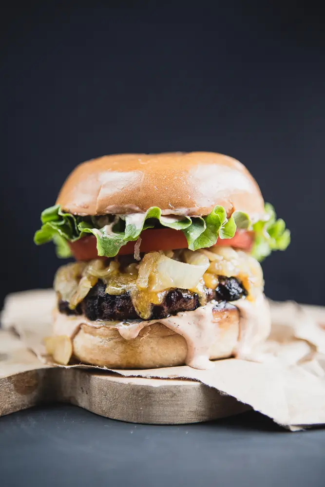
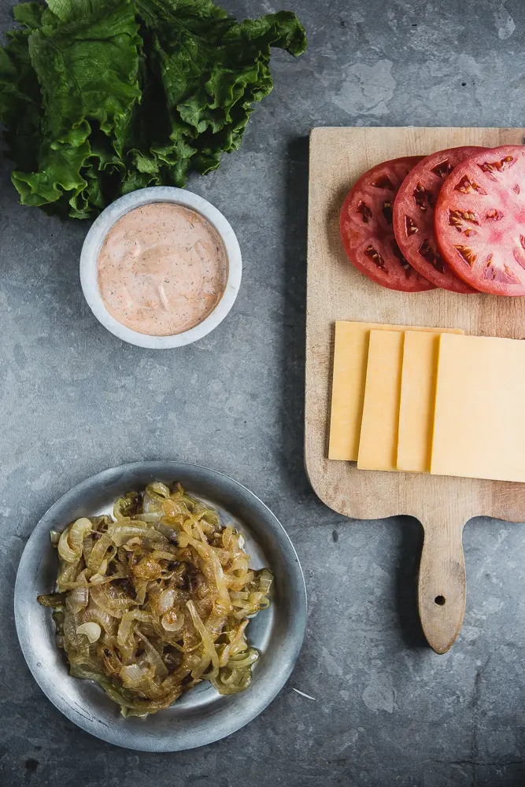
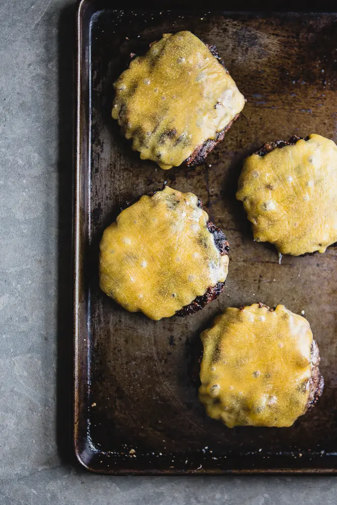
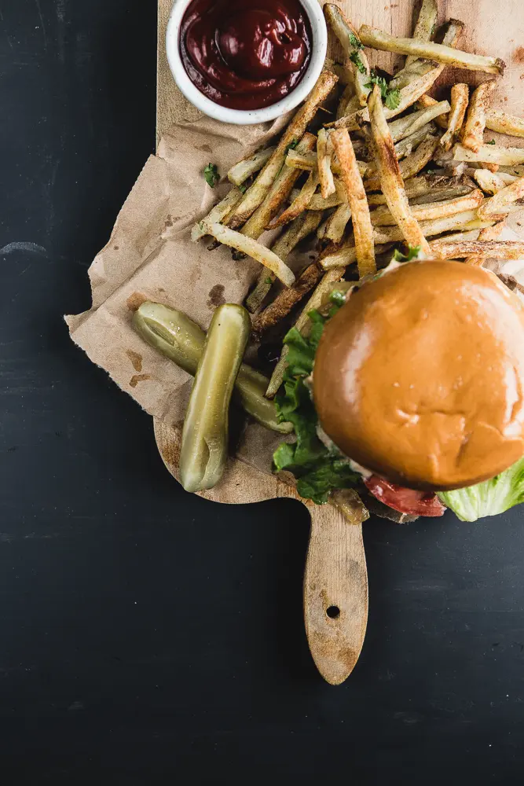
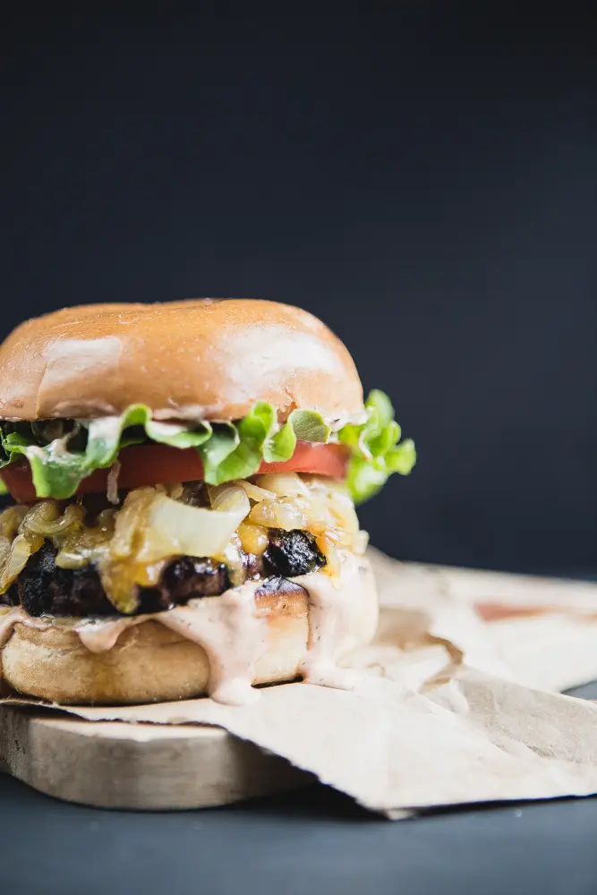

A perfectly soft bun, quality, juicy meat that is seasoned well, plenty of cheese, caramelized onions and a really good secret sauce are the key to making a truly classic cheeseburger at home.
Just The Best Cheeseburger Recipe, Ever.
There's no restaurant or fast food burger that compares to a homemade cheeseburger. If you don't agree, then you clearly haven't made THIS classic cheese burger recipe with our special secret sauce. Add a generous amount of it to each side of the hamburger bun along with a heaping pile of caramelized onions and you've got yourself one incomparable homemade classic burger!


Classic Cheeseburger
with Secret Sauce
- PREPTIME: 15min
- SERVES: 6
- COOKTIME: 35min
- CALORIES: 887
Ingredients to Make A Classic CheeseBurger.
This traditional homemade burger recipe has a few key components. The first is obviously the not so secret, secret sauce. Next is the perfectly caramelized onions paired with perfectly seasoned homemade hamburger patties! Add the classic cheese, lettuce and tomato and combo you are right on target for a big time winning dinner! Here's everything you'll need to make the burger sauce!
- Mayo ketchup make up the base of this special burger sauce.
- Garlic powder, mustard powder & dried dill give this sauce a nice punch of flavor.
- Smoked paprika & cayenne pepper take the heat and smokiness to new heights.
- Lime juice & Spicy pickle juice are our two secret weapons.
Best Burger Sauce Recipe Ever


- Mayonnaise
- Ketchup
- Garlic Powder
- Spicy pickle juice
- Dill (dried)
- Fresh lime
- Smoked paprika
- Cayenne pepper
- Ground mustard
And Now—Use That Burger Sauce ! AKA How To Make The Best Cheeseburger Ever.
A lot of the work of making a truly classic
cheeseburger is in the gathering of just the right ingredients. Get yourself some high quality ground beef. Then, look for some really nice, slightly squishy buns—no whole grains here. Good
cheddar cheese—it has to be
cheddar—or try a little
cheddar and a little
American cheese for a really classic, diner-style melty
cheese situation. Once you’ve gathered your ingredients and made that killer secret
sauce, make a
cheeseburger! Here’s how:
-
Caramelize some onions!
- Season your beef! With a light touch, use your hands to mix in eggs, grated onion, garlic powder, mustard powder, salt and pepper.
- Make patties! Whatever size you prefer.
- Grill those burger patties! Again, to whatever doneness you like. If you’d like, you can use a meat thermometer—160°F is medium, 145°F is medium-rare.
- Top with cheese! When you flip the burger, top it with cheese. That way the cheese has time to melt while the burger finishes cooking.
- Assemble! Everyone can assemble their own as they please but we highly recommend eating them with all of the fixings.
Ingredients
- 2tps - olive oil
- 2 - yellow onions, thinly sliced in rings
- 2lbs - 80% lean grass fed ground beef
- 2 -eggs
- 1/2 cup - yellow onion grated
- 3 tsp - garlic powder
- 2 tbsp - Worcestershire
- 2 tsp - mustard powder
- 2 tsp - salt + more for seasoning patties
- 1 tsp - ground pepper + more for seasoning patties
- 1 - tomato sliced
- 6 - cheddar cheese slices
- 6 - romaine lettuce leaves, torn into pieces
- (pickles optional)
- 6 - brioche hamburger buns, or sweet Hawaiian buns
Secret Sauce
- 1 cup - Mayonnaise
- 2 tbsp - ketchup
- 1/2 tsp - garlic powder
- 2 tbsp - pickle juice
- 1 tsp - dried dill
- 2 tsp - lime juice
- 1 tsp - smoked paprika
- 1/2 tsp - cayenne pepper
- 1 tsp - ground mustard
Method
- In a small bowl, whisk together all secret sauce ingredients until smooth. Cover and refrigerate until use. Can be stored in an airtight container for up to a week.
- Heat olive oil in medium sized, heavy bottom sauce pan over medium heat. Add the thinly sliced onion rings and sauté over medium-low heat until caramelized. About 25-35 min. If they start browning too quickly, lower the heat. Once finished, set aside.
- In a large bowl place ground beef, eggs, grated onion, garlic, Worcestershire, mustard, sea salt and pepper. Using your hands (or stand mixer) mix the meat together until completely combined. Divide the meat into four equal parts and form it into patties about ⅓ inch thick. Set aside on parchment paper.
- Heat grill on high for 10 min.
- Season each patty with a little salt and pepper and place on the hot grill. Reduce heat to medium and close the lid. Cook for 5 minutes. Flip the burger patties and cook for another 3-5 minutes, or until center is just barely pink (to your liking). Add the cheese to the patties, close the lid and allow it to melt. While the cheese is melting, use your hot grill to toast your buns!
- To prepare the cheeseburgers, add a generous amount of secret sauce to both top and bottom of the toasted bun. Add the beef patties, then layer on the lettuce, onions and tomato. Serve with pickles.